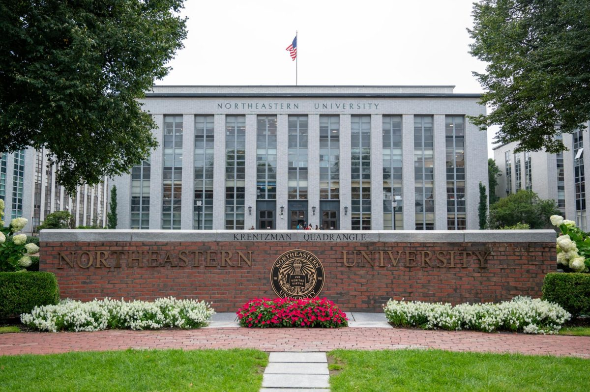

My Skills
As mentioned in my introduction, I am a second year Computer Science major. I started taking Computer Science classes in high school, so between then and now I have taken a lot of coursework and learned a lot of material and skills relating to the field. Python was the first language I learned as a beginner, and it is definitely one of my favorites due to the familiarity and simplicity. In high school, I also learned Java for one of my Computer Science classes, and have taken courses at Northeastern based in Java, so I have a good feel and liking of the language as well. At my internship this past summer, my project was in C++, which I had never worked with before and had to learn as I went. I learned SQL and React on my summer study abroad program, where I learned about databases and the mathematical foundations of machine learning models and then had to create a website using those two skills to present my findings and research from the summer. I’ve been learning Linux through cybersecurity and systems courses over these past three semesters at Northeastern, and I have done some personal work with Excel.
Technical Skills and Corresponding Comfort Levels:
Courses taken at Northeastern University

Fall 2025
- CS 1200: First Year Seminar
- CS 1800: Discrete Structures
- CS 1802: Seminar for CS 1800
- CS 2100: Program Design & Implementation 1
- CS 2101: Lab for CS 2100
- HONR 1102: Honors Discovery
- HONR 1310: Math, Magic, Puzzles & Games
- MATH 1365: Intro to Mathematical Reasoning
Spring 2026
- COMM 1112: Public Speaking
- CS 2484: Principles of Human-Computer Interaction
- CS 3100: Program Design & Implementation 2
- CS 3101: Lab for CS 3100
- CY 2550: Foundations of Cybersecurity
Summer 2026
- ABRD 5102: International Study: Belgium
- CS 4973: Data-Driven Data App Development
- DS 3000: Foundations of Data Science
Fall 2026 (In Progress)
- CS 1210: Professional Development for Co-op
- CS 1720: AI Platforms
- CS 3000: Algorithms & Data
- CS 3650: Computer Systems
- DS 4200: Information Visualization